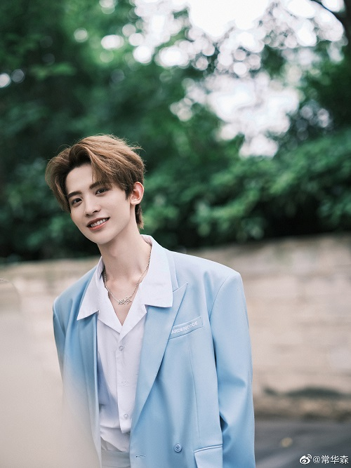
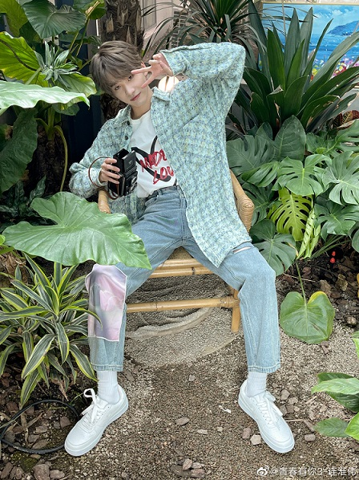
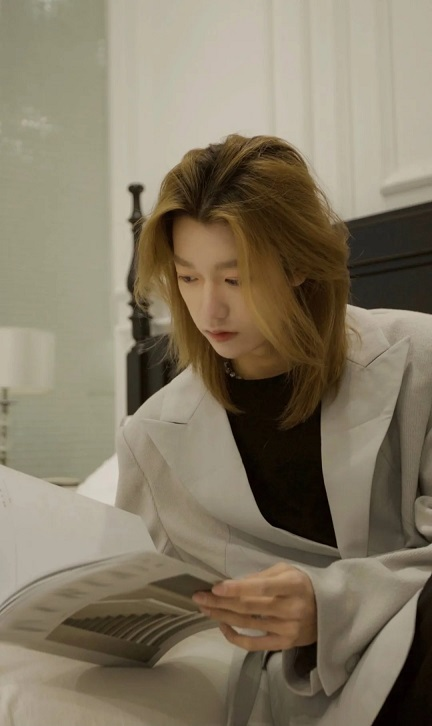
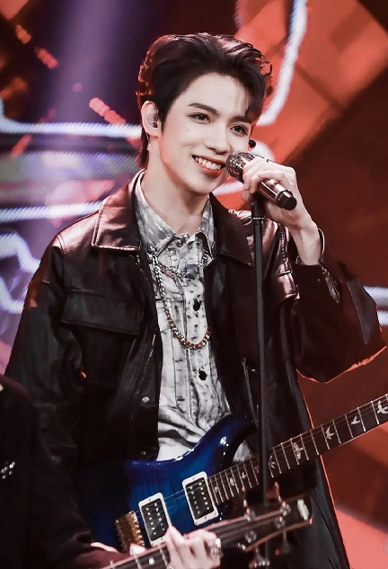
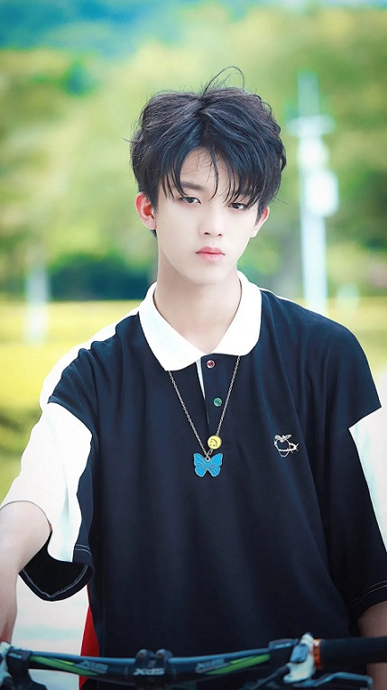
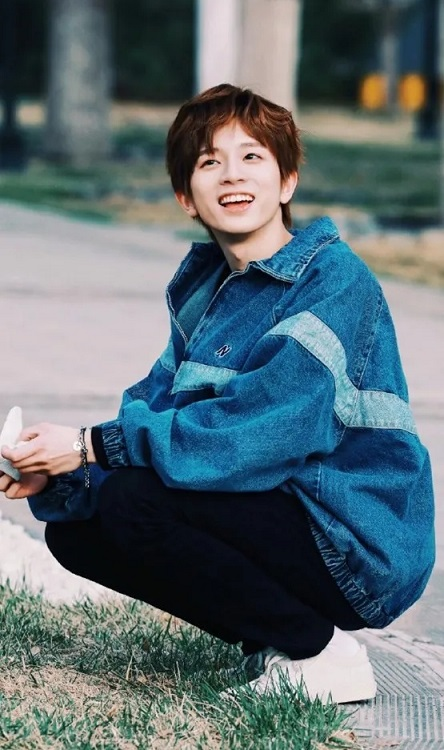
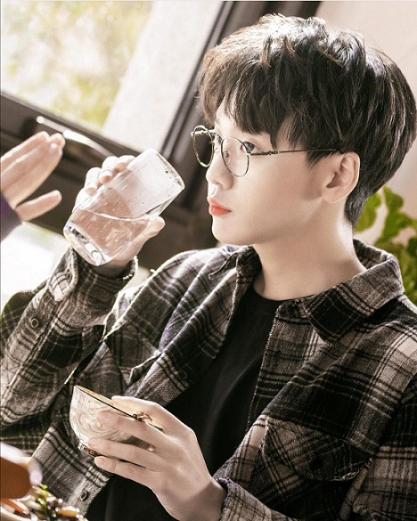

WELCOME TO MY IDOLS
I have SO MANY idols that I look up to. If I was to write all of them, I would be writing more than 10 paragraphs! To not make the people that are viewing this website read 10+ paragraphs I will only write about the idols that I look up to in a show called"Youth With You 3". (If I have time I will update more. IF!)
There is Chinese show(选秀节目) that will choose a boy idol group after a few months.(Apparently Google tells me it's called a Talent Show???) This is already the fourth season, I have watched Season 1(Idol Producer) and Season 3(Youth With You 2). Do not ask why season 1 has a whole different name.(It's because during the first season the director and people did not apply for the copyrights.)
I have 9 people that I really like in the show. They are Tony Yu(JingTian Yu), YiZhou Luo, HuaiWei Lian, JoJo Tang(JiuZhou Tang), Kachine Sun(YingHao Sun), YiHang Sun, Neil Liu(GuanYou Liu), X Duan(XingXing Duan), Waston Chang(HuaSen Chang).(I hope that's how you spell their english names...) I will be spliting them into 2 groups to be talking about. The 21+ and the 21- age groups.
In Chinese it is last name first and first name in the end. In English it is first name and then last. So some of their names might be in both Chinese and English versions. Sorry
ALSO! In these types of shows they will be given an rating. Start with A-N. A as the best, B as in good, C as in okay, D as in not very good, and N as in "NEW" which means they need improvement.
21+ Age Group
Waston Chang
Waston Chang(HuaSen Chang). Chang Huasen, born on September 6, 1997 in Zibo City, Shandong Province, is an actor and pop singer in mainland China. He graduated from Hangzhou Dianzi University. He is a very smart, he had a score of 610/750 in The national college entrance exam, known as the "Gaokao". Which is very high for people to have. When he first came to the show he had only had been a trainee for 1 month. He start with being given a N. He started off dancing and singing not very good, but after 3 months he improved A LOT!
X Duan
X Duan(XingXing Duan). Duan Xingxing, born on January 10, 1998 in Guizhou Province, is a male singer and dancer from Mainland China. Before coming to the show he was (and still is) a street dancer. In 2016, after graduating from high school, Duan Xingxing began to work as a dance teacher in a local street dance organization in Guizhou. In addition, he has won many championships in street dance competitions. When he first came to the show his dancing was WONDERFUL! He started with being given an A!
JoJo Tang
JoJo Tang(JiuZhou Tang). Tang Jiuzhou, born on February 5, 1998 in Changchun, Jilin, graduated from Beijing University of Posts and Telecommunications, male host and singer in mainland China. He is also very smart like Waston. He had a score of 642/750 in The national college entrance exam, known as the "Gaokao". Which is even higher for people to have. When he first came to the show he had only been a trainee for less 1 month. He had 0 experience dancing and singing, so he was also given a N. He started off dancing and singing not very good, but made great progress after 3 months.
HuaiWei Lian
HuaiWei Lian. Lian Huaiwei, born on March 18, 1998 in Quanzhou City, Fujian Province, is a male pop singer in Mainland China. Trainee of "Youth Season 1" and "Youth With You 3". He also has his own studio and he is the boss of the studio!!! This is already the second time he participated in the You With You show. The first time was in 2019 in "Youth With You 1" he was 10th place, while 9th is the last debuting place. (OF COURSE I THINK THAT IQIYI CHANGED VOTES!!! Yes the show always changes votes!) In "You With You 1" he was better at dance and now he is an ACE! He started with being given a C!?!?!?!?!?!?
21- Age Group
Kachine Sun
Kachine Sun(YingHao Sun). Sun Yinghao, born on June 6, 2000 in Chifeng City, Inner Mongolia Autonomous Region, is a male singer and dancer from Mainland China. Before participating in "You With You 3", Yinghao Sun had been choreographing for a long time and had also done backing dancers for many celebrities. Online may people were cyber bullying him just because he had long hair. However, he never listened to those bad comments and kept his hair long till now. Also a cool fact his name was Sun DaLong before and then was changed to Sun YingHao. He started with being given an A!
YiZhou Luo
YiZhou Luo. Luo Yizhou, 2000 March 16 was born in Yinchuan, height 185cm, dancers, theater film and television actor, mainland Chinese pop male singer.In 2016, graduated from the Dance Department of the PLA(Military and Cultural College of National Defense University of Chinese People's Liberation Army) Academy of Art , undergraduate student of the 2018 Performance Department of the Central Academy of Drama. He was the Center for the theme song 《We Rock》 of "Youth With You 3". He started with being given an A!
YiHang Sun
YiHang Sun. Sun Yihang was born in Chongqing on October 21, 2001, a male pop singer, film and television actor in Mainland China, and a member of the male singing group Yi'an Music Club. His really name is Huang YuHang and then his company changed his name to Sun YiHang. In 2012, he joined the TF family , became a subordinate intern, and was appointed as the monitor. In 2017, he became the first-stage student of the interdimensional boy group Yi'an Music Club, officially debuted under the stage name "Sun Yihang", and withdrew from the TF family. He started with being given a B.
Neil Liu
Neil Liu(GuanYou Liu). Guanyou Liu (Neil), born in Taiwan, China on May 14, 2002, he is a Taiwan male singer and professional dancer. In 2016, he was selected by a scout and was successfully admitted as a trainee by the Korean agency TOP Media. He went to South Korea and trained for three and a half years before becoming one of the seven-member reserve members of the new boy group MCND. However, in January 2020, after receiving three-and-a-half years of training, Liu Guanyou was not selected for the debut team!?!? (TOP Media Entertainment is offically a garbage company to me!) He is also now in the same company as Waston. He started with being given a B.
Tony Yu
Tony Yu(JingTian Yu). Yu Jingtian (Tony) was born on August 21, 2002 in Chengdu, Sichuan Province, later he went to Canada with his family in 2008 and grew up in Vancouver, where he learned piano since childhood. He is a male pop singer, film and television actor, and dancer. In 2019, Yu Jingtian participated in the Korean Men's Team Draft " PRODUCE X 101 " and finished 20th in the finals. He was the only foreign player to enter the finals and successfully gained attention. He was first place in all three rounds of ranking. He started with being given an A!
The reason that I like them are because they work very hard towards their goals and have very good self control. They would go 1-3 days without sleeping or only sleeping less than 3 hours a day to learn the theme song. Also since Chinese idols must be like VERY skinny(I do not know why, I just want them to he healthly) they barely eat any calories. Most of them are 50-65KG and have a height of 180+ which is not very healthly. They get hurt very often, but they never stop practicing before going on stage. They would get cyber bullied VERY OFTEN there will always be bad comments under their social medias and videos. However, none of them stopped and turned the bad comments into something to make them keep working harder. They are the light in my life and are the reason that I work hard and aim for my goals. Sometimes I just want to give up on hard things in my life, the ONLY reason I didn't give up is because of them.
The show has been stopped because of some stupid fans. It's because some fans(Irrational fans!) they were dumping "milk" into lakes(I think). I feel VERY bad for the trainee. They worked hard for 3+ months just to debut and just a few days before the debut the show was stopped. I must say having an idol is a good thing but YOU MUST BE san. Having an idol should make you improve not regress.